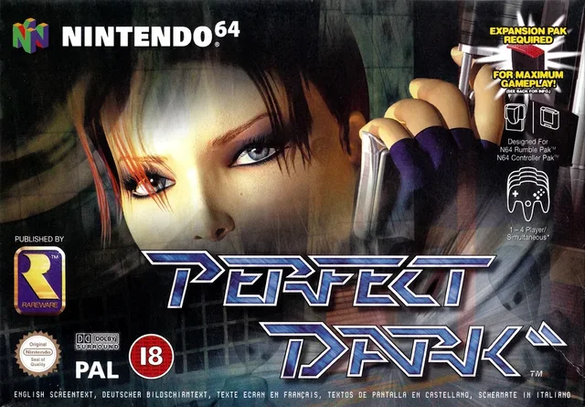
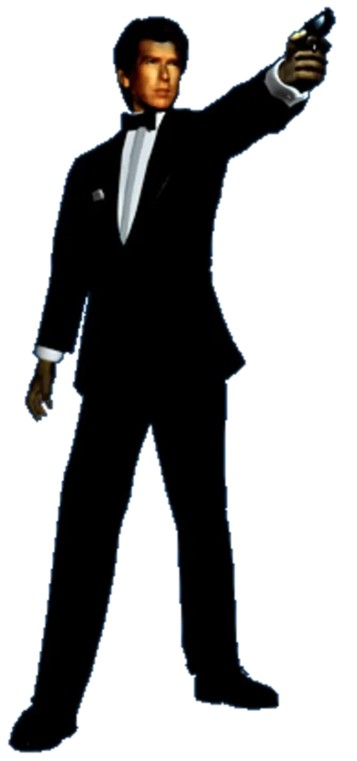
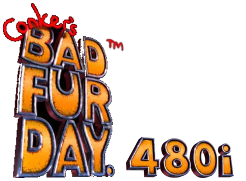
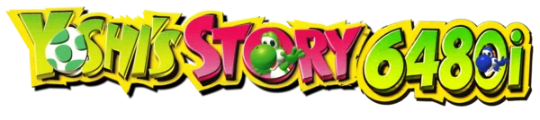

Perfect Dark
640×480 interlaced output on the newer performance base, with menu, pause-blur and CamSpy fixes. Two editions: v88 without the FPS graph, and v87 with it.
Patches that move N64 games into the console’s sharper 480-line interlaced mode, one game at a time. New to the idea? Why 480i?

640×480 interlaced output on the newer performance base, with menu, pause-blur and CamSpy fixes. Two editions: v88 without the FPS graph, and v87 with it.

Tomorrow Never Dies 64 Expanded, the fan-made campaign by TiJay, Wreck and the TND64 team on GoldenEye 007’s engine, patched for 480i. It applies to your own GoldenEye 007 (USA) dump.

Conker is next on the bench. While you wait, the game’s seven skyboxes are filed in Render Restore: explore the skyboxes.
Under wraps for now. Details will appear here when there is something to show.

Yoshi’s Story has joined the bench.
How the 480i picture works and what it changes: Why 480i? Every release in order: the timeline.